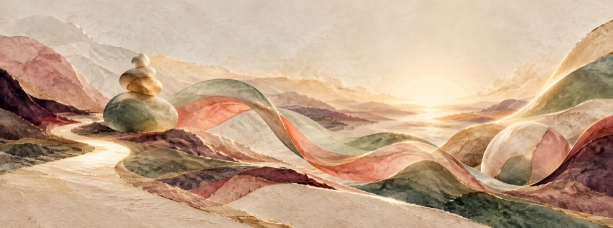
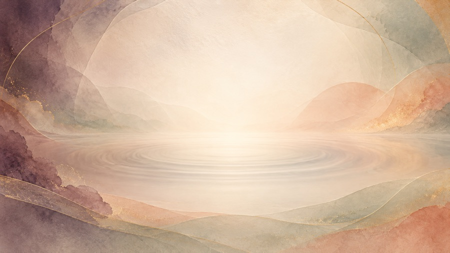

Listen · Read · Reflect
Blog
Ideas, stories and podcast conversations for navigating purpose, relationships, healing, faith and meaningful growth.

From Pain to Purpose
A grounded story about resilience, recovery and building a meaningful next chapter.Read and reflect →